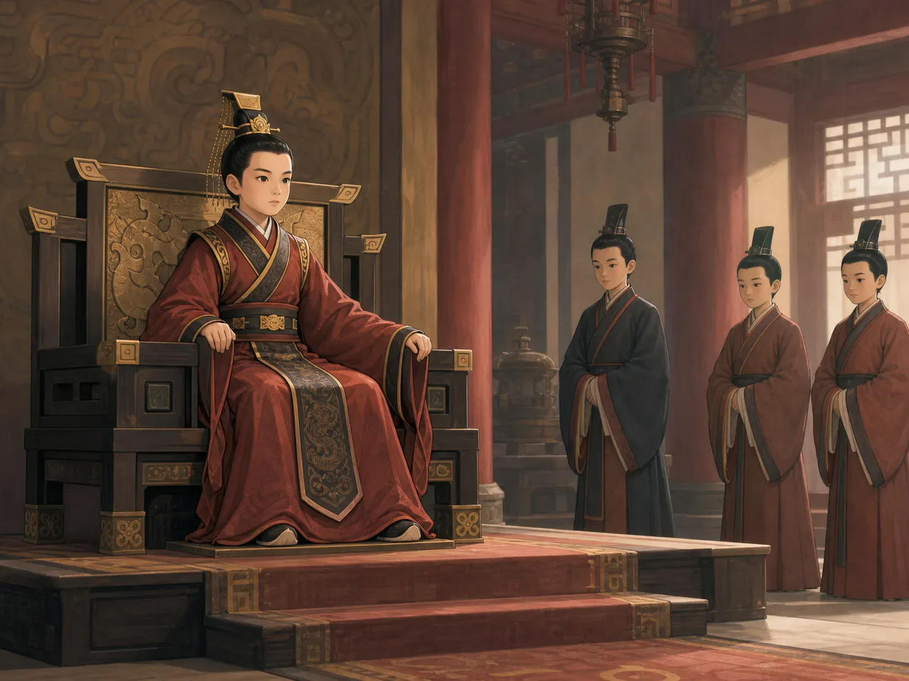

秦始皇：想让所有规则都一样的皇帝
Qin Shi Huang: The Emperor Who Wanted Everything to Match
Page 1
十三岁的国王
A King at Thirteen

Ying Zheng became king of Qin when he was thirteen.
两千多年前，中国还不是一个统一的国家。七个强大的国家互相争战，秦国是其中之一。
嬴政十三岁时，成了秦国的国王。那时候，他还不是皇帝，另外六个国家也不归他统治。
嬴政虽然年轻，秦国却已经很强。它有强大的军队、严格的法律，还有许多帮助管理国家的人和有经验的将军。最初几年，宫里的成年人帮助少年国王处理重要的事情。
嬴政长大以后，开始亲自作决定。他派军队打败六个别的国家，把大片土地放到一个人手中。
过去，每个国家都有自己的国王。嬴政觉得“国王”这个称号已经不够了，于是给自己创造了一个新称号：皇帝。后人叫他Qín Shǐhuáng · 建立秦朝、统一中国的第一位皇帝。，也就是秦国的第一位皇帝。
More than two thousand years ago, China was not yet one united country. Seven powerful kingdoms fought for land, and Qin was one of them.
When Ying Zheng was thirteen, he became the king of Qin. He was not yet an emperor, and the other six kingdoms did not belong to him.
Ying Zheng was young, but Qin was already strong. It had a powerful army, strict laws, people who helped run the kingdom, and experienced generals. For several years, adults at court handled much of the work while the young king grew up.
When Ying Zheng grew older, he began making the big decisions himself. His armies defeated six other kingdoms and brought a great stretch of land under his rule.
Each kingdom had once had its own king. Ying Zheng decided that “king” was no longer a big enough title. He chose a new one: emperor. We remember him as Qín Shǐhuáng · 秦始皇 · The First Emperor, who founded the Qin dynasty and united China., the First Emperor of Qin.
Page 2
地图里藏着一把匕首
A Dagger Hidden in a Map
秦国接连攻打别的国家，害怕和愤怒也跟着传开了。有些人认为，杀死秦王也许能让秦国的军队停下来。一个名叫荆轲的人假装带着礼物，走进秦国的宫殿。
他慢慢展开一幅地图。地图越展开越长，直到最后，一把藏在里面的匕首突然露了出来。
荆轲抓住秦王的衣袖，秦王猛地挣脱，袖子被扯破了。秦王的剑挂在腰间，可荆轲离得太近，长长的剑身怎么也不能一下子完全拔出来。站在旁边的人按照宫里的规矩又不能带武器，只能着急地想办法帮忙。
这时，一位医生把手里的药袋朝荆轲扔去。药袋当然打不赢刺客，却让秦王得到一点时间，终于拔出剑来。刺杀失败了。
刺杀失败了，秦国的军队继续攻打其他国家。秦王想让七个国家都归自己统治，变成一个帝国。可是，对被秦军攻打的家庭来说，这意味着战争来到了自己的家门口。
As Qin attacked one kingdom after another, fear and anger spread. Some people believed that killing Qin's king might stop his armies. A man named Jing Ke entered the palace pretending to bring gifts.
He slowly unrolled a map. More and more of it opened—until a dagger hidden at the end suddenly appeared.
Jing Ke grabbed the king's sleeve. The king pulled away so hard that the cloth tore. The king's sword hung at his waist, but Jing Ke was too close. The blade was so long that he could not pull it all the way out. Palace rules did not allow the other people in the hall to carry weapons, so they could not rush forward with swords of their own.
Then a doctor threw his medicine bag at Jing Ke. A medicine bag was not much of a weapon, but it gave the king enough time to draw his sword. The attack failed.
The attack failed, and Qin's armies continued fighting the other kingdoms. The king of Qin wanted to bring all seven kingdoms under his rule and make one empire. But for families in the places Qin attacked, it meant that war had come to their homes.
Page 3
如果一杯米不是同样多
What If One Cup Was Not One Cup?
打下这么多地方以后，秦始皇遇到了一个大问题：每个地方的规矩不一样。
想象你在一个城里买“一杯米”，走到下一个城，“一杯”却忽然变大或变小。钱币的样子不同，秤东西的方法不同，写重要消息的方法也不同，连马车两个轮子之间的距离都可能不一样。做生意和传递命令会变得非常麻烦。
秦始皇命令各地使用更统一的文字、钱币、重量和长度。道路和车辆也尽量按照共同的规则来安排。这些变化没有在一天里神奇地完成，可它们让不同地方更容易一起做事。
秦始皇最重要的力量，不只是打赢战争。他还努力让这个新帝国按照同一套规则运转。
After taking so much land, Qin Shi Huang faced a huge problem: different places followed different rules.
Imagine buying “one cup” of rice in one town, then finding that “one cup” meant a different amount in the next. Coins looked different. Weights did not match. People wrote records in different ways. Even cart wheels might not fit the same ruts in the road. Travel and trade could become one long argument.
Qin Shi Huang ordered people to use more matching forms of writing, money, weight, and length. Roads and carts also had shared rules. The changes did not happen by magic in one day, but they made it easier for faraway places to work together.
The emperor's power came not only from winning wars. He also pushed his new empire to run by one set of rules.
Page 4
这些工程是谁建的？
Who Did All the Work?
秦始皇修建道路、宫殿和运水的河道。在秦国统一以前，北方几个国家已经沿着边界修了一段段城墙。秦始皇命令工人修补其中一些，再把它们连成长长的防线，用来守卫北方。这些大工程让军队和消息走得更快，有些道路也被后人继续使用。
修建这些工程需要非常多的人。许多百姓、士兵和犯人被迫工作，有些人离家多年，还有些人再也没有回来。秦国还向百姓收走粮食和钱，也让更多人去当兵。
秦朝的法律很严格，惩罚也很重。秦始皇下令烧掉许多他不希望人们阅读和保存的书。反对他的人可能受到重罚，甚至被杀死。
新道路让马车、消息和军队走得更快。可是，被迫修路的人常常受尽辛苦。有人多年不能回家，也有人死在了工地上。
Qin Shi Huang built roads, palaces, and waterways. Before Qin united the kingdoms, several of them had already built sections of wall in the north. Qin Shi Huang ordered workers to repair some of those sections and connect them so soldiers could guard a longer border. These great projects helped armies and messages move faster. Some roads were used long after Qin was gone.
Building these projects took an enormous amount of work. Many farmers, soldiers, and prisoners were forced to do it. Some stayed away from home for years, and some never returned. Qin also took grain and money from families and sent more men into the army.
Qin had many strict laws. The punishments could be very cruel. Qin Shi Huang ordered people to burn many books he did not want them to read or keep. People who spoke against him could be punished or killed.
The new roads helped carts, messages, and armies move faster. But the people forced to build them often suffered. Some could not return home for years. Others died at the work sites.
Page 5
一支陶土做成的军队
An Army Made of Clay

Thousands of clay soldiers and horses were buried near Qin Shi Huang's tomb.
秦始皇希望自己能够永远活下去，还派人寻找让人长生的药。可是，成为皇帝大约十一年以后，他在巡视帝国的途中生病去世了。我们不知道他的确切死因。
秦始皇很早就开始为自己地下的墓作准备。他去世以后，墓旁安静地站着一支用táotǔ · 经过塑形和烧制后变硬的陶土材料。做成的军队。
很多世纪以后，农民打井时挖到陶片，人们才发现了Bīngmǎyǒng · 秦始皇陵附近出土的大型陶制军阵。。英文里的 terracotta，就是经过塑形、再用火烧硬的陶土，所以兵马俑也叫 the Terracotta Army。研究过去的人后来找到成千上万件陶土士兵、马和战车。许多士兵的脸看起来各不相同，好像一支真正的军队忽然停住了脚步。
想仔细看看那几千张不同的脸到底是不是照着真人做的吗？可以继续读《兵马俑：八千张脸，八千幅肖像吗？》
兵马俑站在秦始皇主墓室附近的坑里，并不在墓室里面。考古人员还没有打开那间主墓室，所以没有人确切知道里面有什么。
修建陵墓的人把一支陶土大军放在秦始皇身边。两千多年以后，这支军队让我们看见秦朝士兵的铠甲、武器和战车是什么样子。
Qin Shi Huang wanted to live forever, and he sent people to search for medicines that promised a longer life. But about eleven years after he became emperor, he grew sick and died while traveling through his empire. No one knows exactly what caused his death.
Qin Shi Huang began preparing his tomb long before he died. Beside it, an army made of clay stood silently underground.
Many centuries later, farmers digging a well found pieces of clay. táotǔ · 陶土 · Clay that is shaped and baked until it becomes hard. is clay that has been shaped and baked until it becomes hard. That is why the figures are called the Bīngmǎyǒng · 兵马俑 · The life-size clay army found near the tomb of the First Emperor.. People studying the past later uncovered thousands of clay soldiers, horses, and war chariots. Many faces look different, as if a real army had suddenly stopped in its tracks.
Want to look more closely at those thousands of different faces? Read “Terracotta Warriors: Are 8,000 Faces 8,000 Portraits?”
The Terracotta Army stands in pits near the emperor's main burial room, not inside it. Experts who study the past have not opened that room, so no one knows exactly what is inside.
The people who built the tomb placed a clay army beside Qin Shi Huang. More than two thousand years later, it helps us see the armor, weapons, and war chariots of his time.
秦朝很快结束了
The Qin Dynasty Ended Quickly
秦始皇去世后不久，各地就发生了反抗。严格的法律、沉重的劳役和多年的战争让许多人再也无法忍受。秦朝很快结束了。
可是，后来的朝代继续使用一些更统一的文字规则、钱币和量东西的办法，也保留了“皇帝”这个称号。
秦朝只存在了十五年。它推行的一些共同规则，却被后来的朝代继续使用。
Only a few years after Qin Shi Huang died, rebellions broke out. Strict laws, forced labor, and years of war had made too many people angry. The Qin dynasty soon ended.
But later dynasties kept some of Qin's shared rules for writing, money, and measuring. They also kept the title “emperor.”
The Qin dynasty lasted only fifteen years. Some of the shared rules it put in place lasted much longer.